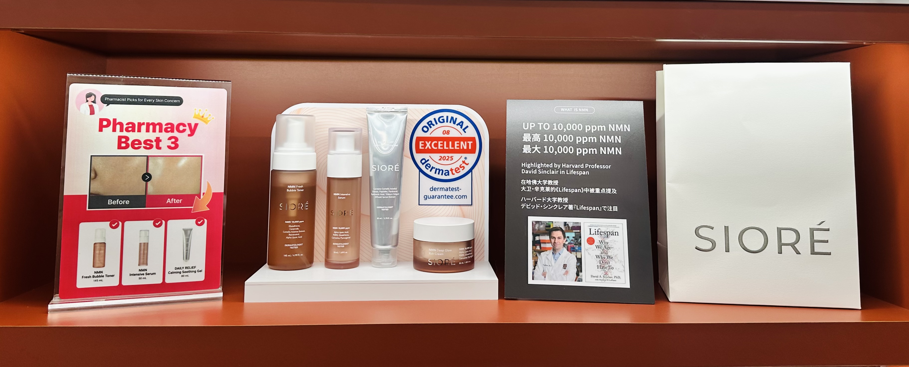

PHARMACY BEST 3GLOW · FIRMING · CALMING
광채·탄력 + 열감 진정 베스트 3
버블 토너인텐시브 세럼카밍 수딩 젤
버블 토너로 수분·광채 바탕을 만들고, 인텐시브 세럼으로 탄력을 집중 관리한 뒤 수딩 젤로 달아오른 피부를 산뜻하게 진정합니다.
“칙칙함과 탄력은 토너·세럼으로 집중 관리하고, 열감이 느껴질 때는 수딩 젤로 빠르게 편안하게 해주세요.”
추천: 광채·탄력 저하와 열감·붉음이 함께 고민인 고객